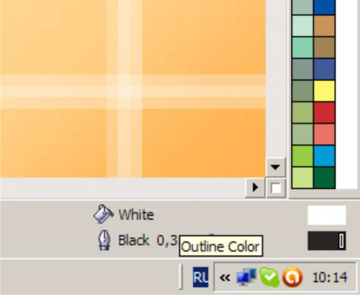

Специфическое обозначение цвета в CDR
Sinto / 27.08.2010, 11:26/00:41
Форум:
Доброго времени суток!
У меня часто случается, что объекты в файлах, сконвертированных из PDF или EPS имеют обозначение цвета с какой-то скрепочкой (или полосочкой?), выглядит это так: 
Перекрашивается эта муть только если скопировать свойства цвета с нормального объекта, но иногда на странице их может быть стотыщмильон до неба :)
Подскажите, пожалуйста - можно ли как-то автоматизировать процесс подготовки таких файлов к печати? Обзывается он обычно как обычный CМYK, тока со скрепкой :(
Заранее благодарю
Sinto, Эта скрепочка (прямоугольничек) значит "Edit" - "Overprint OutLine"
Если быть точнее то этот символ указывает что к этому цвету этого объекта применён Overprint (наложение красок)
П.С. Автоматизировать практически любой процесс подготовки можно с помощью вот этого макроса
GadGett , Sancho, спасибо!
А можно как-нить его победить при помощи Replace Object?
Выдели все объекты и отруби оверпринт.
divingdog, а можно для тех, кто в танке поподробнее
Все объекты со скрепкой? А если это текст, причем каждая буква отдельно и документ при этом многостраничный? И как его вообще можно отрубить?
Пажаааалста, объясните
сам сталкиваюсь с таким редко, но маленько опыта есть
выделить ВСЕ , затем контекстное меню (правая клавиша), там убрать галочку с "наложение... чего-то там". Вроде все.
romio,
Спасяба!!!